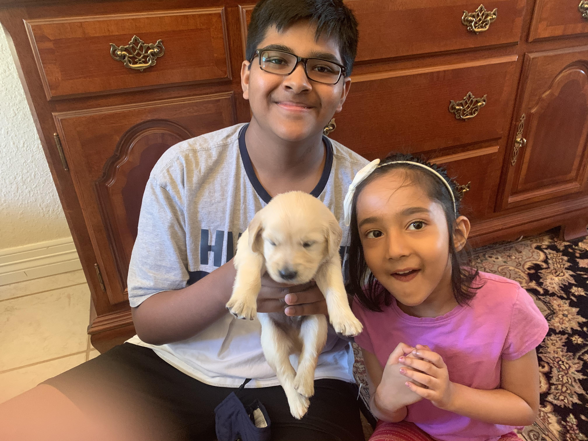

Hi! My name is Gaurav Jha and I'm a senior at Allen High School. I'm in Mr.Ben-Yaakov's third period CSII and took CSII as well as CSI the past two years. I was born in India and I enjoy sports and music. My passion for volleyball first emerged when I watched Haikyuu. This led to me joining the Allen Eagles Men's Volleyball Club's Varsity White team as a middle blocker during my junior year. In addition to volleyball, I love watching and playing football. GO COWBOYS! Music has been a big part of my life. Since 6th grade, I've been constatnly fascinated by instruments and how to play them. I know how to play trombone, flute, and piano.
As a senior, the college application process has already started for me. I wish to apply to only in-state schools because I want to stay close to home. Although I have experience coding in Python, HTML, CSS, and Java, I wish to continue expanding my knowledge and encounter all challeges with a imaginative mindset.
